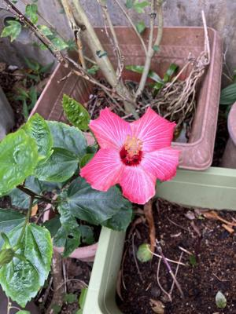

うるがいの話 ある日
最新: もやが晴れる【うるがいの話 ある日】とは 一日だけのプログです
『うるがいの話』の最新一日だけのプログで、通信料が少なく経済的だ。カニの画像をクリックすると全ての日付が載る『うるがいの話』サイトを表示します
|
|
【うるがいの話】 うるがい(ｳﾙｶﾞｲ urugai)とは、『もずくがに』の名前でとても大きくなります。 |
|---|---|
|
|
【カミマヤーの話】 猫のことを方言でマヤーといいます。カミマヤー（kamimayaa）とは、神の猫のことです。 |
|
【たながぁの音楽】 たながぁ（ﾀﾅｶﾞｰ tanagaa）とは手長えびのことで、何種類かあり大きいのは車 エビぐらいになります。 |

|
【ぶながぁの話】 ぶながぁ(ﾌﾞﾅｶﾞｰ bunagaa)とは、赤い髪の毛、赤い身体、そして身長は１ｍ２０ｃｍ ぐらい、川の蟹を食べているの目撃された。場所は沖縄県国頭郡大宜味村のと ある村僕の隣近所に住んでいる爺さんから、聞いた話です。 |
|
|
【ギーマの話】 ギーマ(giima)とは、山原の里山に咲くスズランに似た、 花を付けます。実は食べられます、 気が付くと口の周りが紫になっています。 |
2024年02月14日 (水）もやが晴れる
21:01
２００８年頃、新しいプログラム言語を使うことなった。が、とくだん教育
も受けなかったので分からない。分からないスッキリしないまま、こんにち
に至る。ところがだ、新人のために提供している動画をみていると、なにか
分かりそうな気がした。さっそく、動画を参考にパソコンで実践してみる。
うごく、あたりまえだが、これを２００８年に欲しかった！。動画にはない
モジュール構造化を、試すことにした。ネットを探すが、なかなかうまくい
かない。ｃｈａｔＧＰＴに教えを乞うことに、ほほほ、解決した。さらに会
社で主体の言語と比較するため（ありそうでないのですよ）、ＰＣ３にその
言語をインスートルすることに。ところがだ、ウィンドウズの再起動がなか
なか終らない、待つこと２０分、ドキドキしながら強制的のシャットダウン
再起動、・・・、立ち上がった。オロロロ、続きは明日である。

夕方ジョギングの帰り、地獄坂を登った頂上付近で向かいから来た車の運転
席から、『識名宮は、どこですか？』と尋ねられた、まるきり反対ですよ！
詳しく教えてあげたかったけど、後ろに車が並んでた。
１７時１８分 ビットコインの総資産 ￥２１、６７７（↑８０）